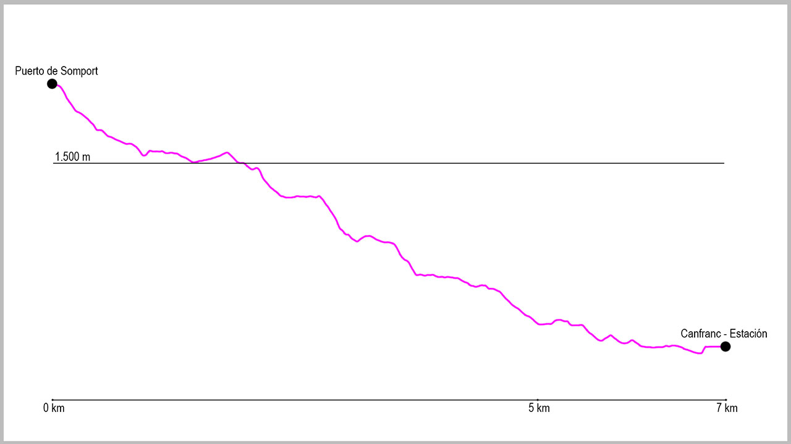

Este recorrido toma la salida del mismo puerto donde inicia el original Camino de Santiago en España. Desde el Summus Portus empezaremos el descenso hasta la Estación de Canfranc.
Tomaremos en este punto una escaleras que descienden hacia la parte sur del puerto, para continuar durante cerca de un kilómetro hasta llegar al antiguo hospital de Santa Cristina. Justo en este momento bajaremos hasta la carretera por otras escaleras, y al llegar a ella giraremos a nuestra izquierda para continuar hasta pasar un pequeño puente. Tras pasarlo volveremos a subir un pequeño tramo de escaleras para afrontar otro kilómetro bastante cómodo.
Al final de este tramo volveremos a llegar a la carretera, esta vez la N330, que deberemos atravesar con mucho cuidado y donde comienza un pequeño tramo de subida asfaltado, que nos llevará hasta Piedras Rojas para descender después por una antigua pista forestal. Al final de la misma encontraremos un desvío a nuestra derecha para continuar nuestro camino, esta vez ya en dirección claramente sur, bajando otro tramo de escaleras bastante irregular.
Justo aquí comienzo ya una zona bastante clara de seguir hasta que lleguemos a la pista de Canal Roya. Aquí cogeremos la bifurcación a nuestra izquierda durante unos 500 metros para posteriormente dejarla en un camino que baja de manera brusca a nuestra derecha. Poco después del cruce llegaremos a un refugio de piedra, donde volveremos a tomar el camino de la derecha para terminar el descenso que nos llevará a la antigua pista del Camping de Canfranc. Aquí giraremos a la izquierda para pasar al poco tiempo un pequeño puente sobre el rio Canal Roya y ascender durante unos 100 metros para justo en la curva de casi 180º salir de la pista a través de un paso de madera situado a la derecha.
Llegados a este punto, el camino se simplifica bastante. Primero llegaremos a una bifurcación que tomaremos a la derecha y poco después atravesaremos el barranco de Izas. A continuación rodearemos por la derecha al antiguo fuerte de Coll de Ladrones, para poco a poco seguir nuestra camino hacia el final de la ruta.
Justo antes de llegar a Canfranc llegaremos a un cruce de caminos que viene desde Coll, donde tomaremos la senda de la derecha que nos llevará a un primer puente que dejaremos a nuestra derecha también para cruzar el río por un segundo puente. En este momento llegaremos a la carretera que da entrada al pueblo, la cual seguiremos por el arcén izquierdo hasta entrar en el núcleo urbano y tras 500 metros llegar a la meta en la Estación Internacional de Canfranc.
